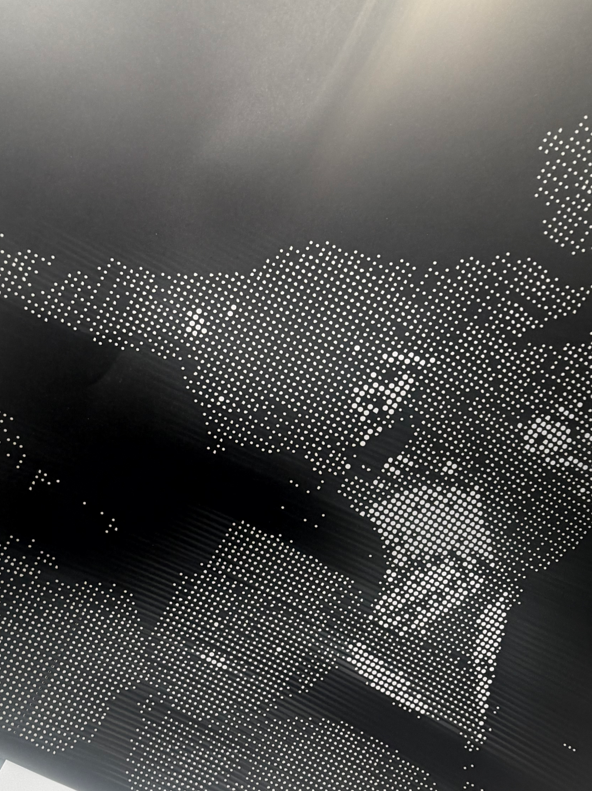
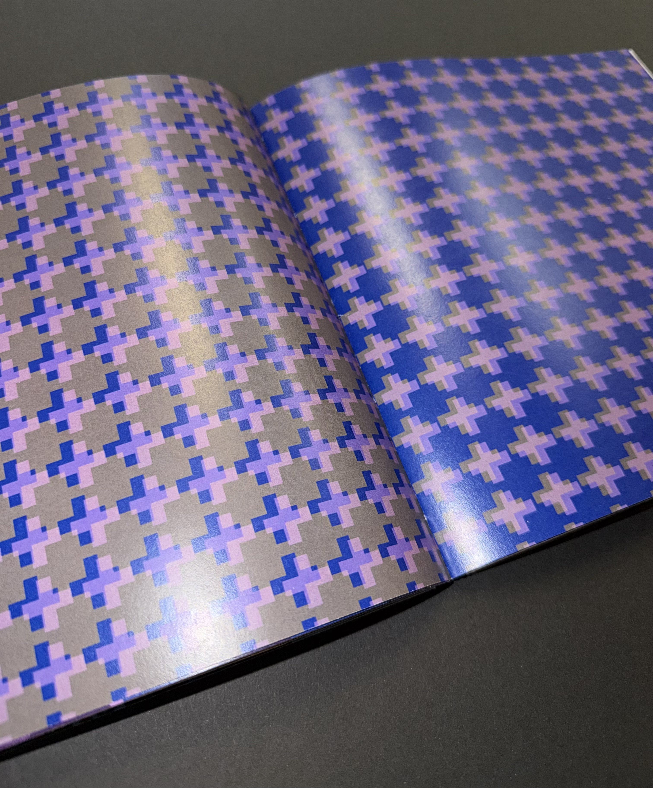
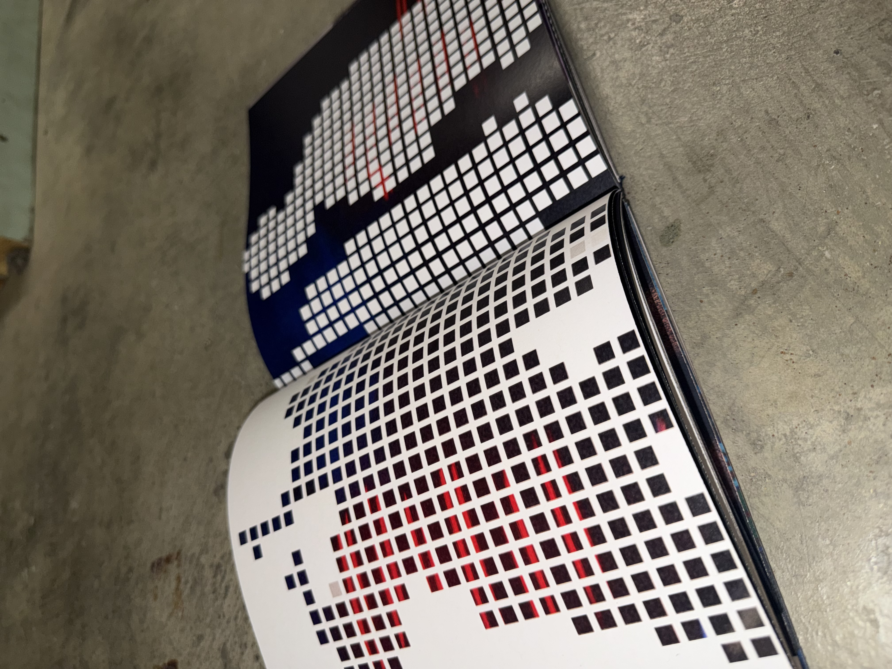
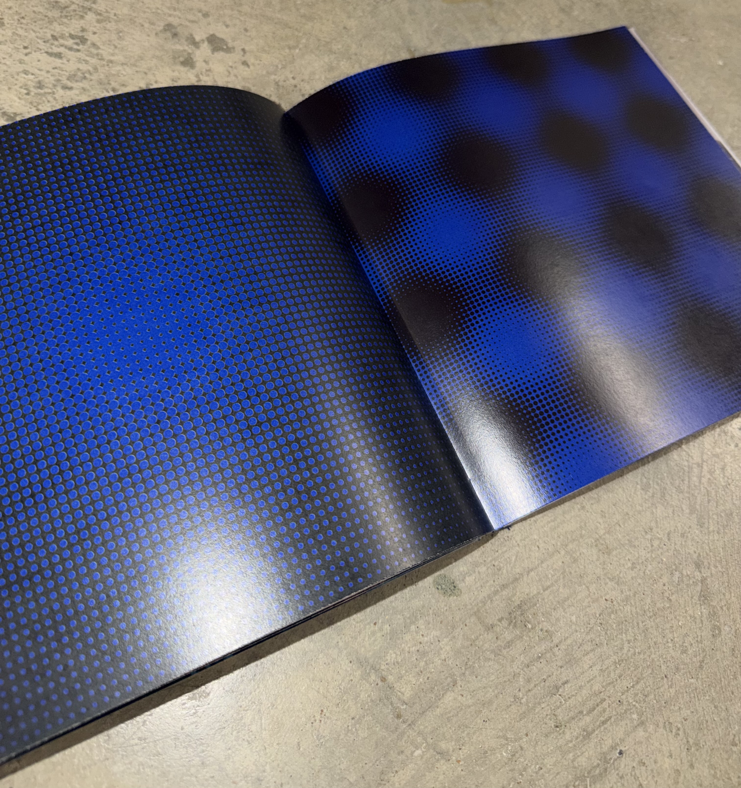
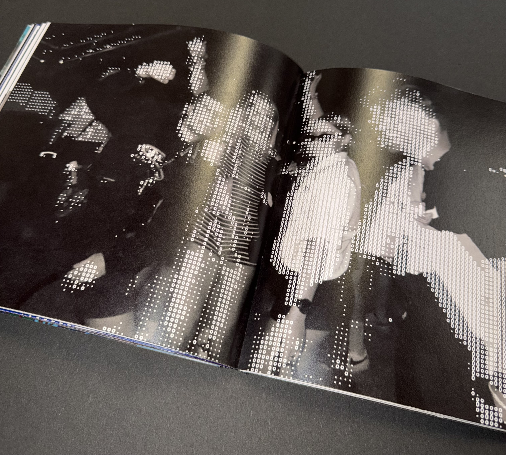

AN ODE TO THE DANCEFLOOR
Creative Coding | Generative Design | Experimental Systems
A computational textile design project inspired by the collective energy of rave culture. Through creative coding, projection, print, and material experimentation, I explore how movement, rhythm, and shared experience can be translated into dynamic visual and textile outcomes.

Concept:
Dancefloors are temporary environments where sound, light, and movement merge to create a constantly evolving atmosphere. This project investigates how these collective behaviours can be captured through computational design, using algorithmic processes to transform the flow of crowds into patterns, animations, and immersive textile experiences.


Concept:
Dancefloors are temporary environments where sound, light, and movement merge to create a constantly evolving atmosphere. This project investigates how these collective behaviours can be captured through computational design, using algorithmic processes to transform the flow of crowds into patterns, animations, and immersive textile experiences.
Research & Inspiration:
Primary research was based on photography taken at raves and live music events documenting movement, lighting, texture, and crowd interaction. These observations informed a visual language centred around repetition, distortion, layering, and rhythm, which became the basis for later computational experiments.

I began exploring the visual language of rave culture through hands-on material experimentation. Using paper weaving, laser cutting, and screen print, I explore how rhythm, repetition, and movement can be translated into tactile textures and layered compositions, establishing a physical foundation for the project's identity.


p5.js and TouchDesigner were used to reinterpret these ideas through creative coding. By generating algorithmic patterns, distorting imagery, and creating animated visuals, I explore how computational processes can extend physical experiments into dynamic, immersive digital experiences.
Projection became a way of bringing my generative designs to life, allowing patterns to shift and evolve across physical surfaces. This reinforced the project's focus on movement, rhythm, and immersive visual experiences.
Outcomes:
The final outcomes include a hand bound publication documenting my digital designs and generative patterns. The designs were also visualised across a range of applications, demonstrating how computational textiles can exist across both physical and digital environments.




Creating a record sleeve which explores how the visual langauge developed through my generative experiments can be applied to physical design outcomes.
Using patterns derived from movement, rhythm, and repetition, this mockup translates digital outputs into a design associated with music culture and dancefloor experiences.
Visualising my designs within a space.
Architecture becomes the projection surface, allowing a strong contrast between industrial structure and fluid digital patterns.